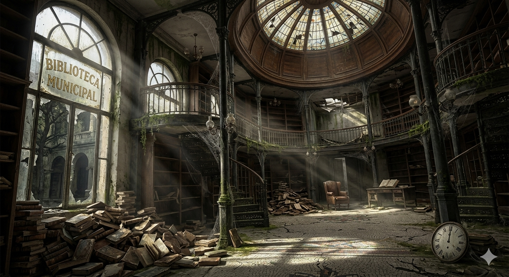
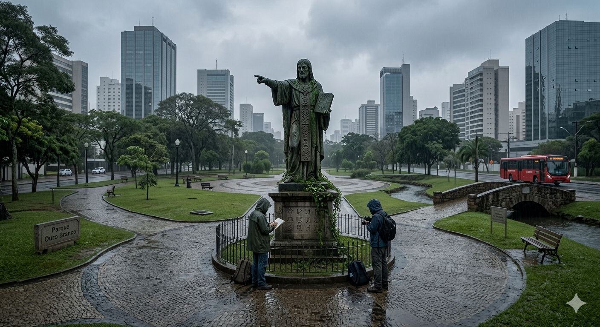
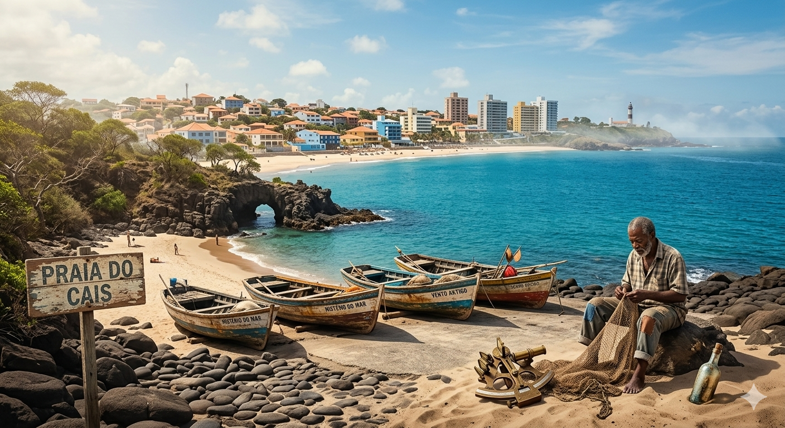
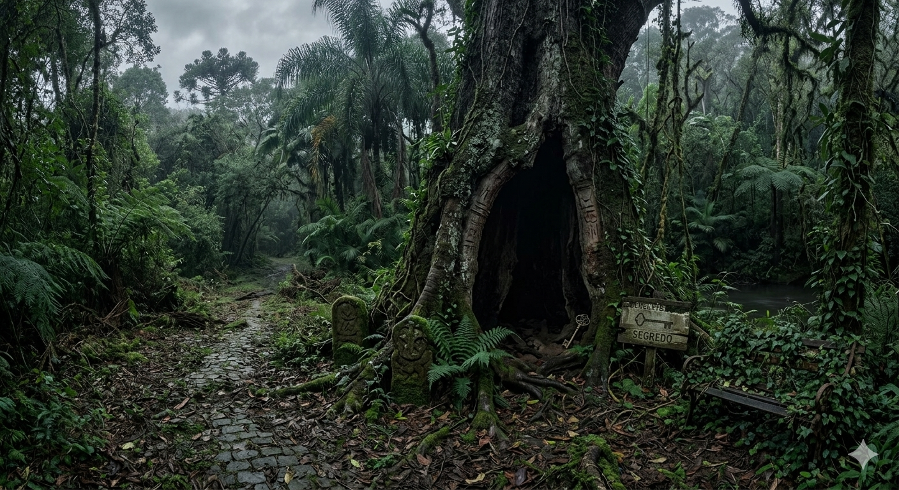
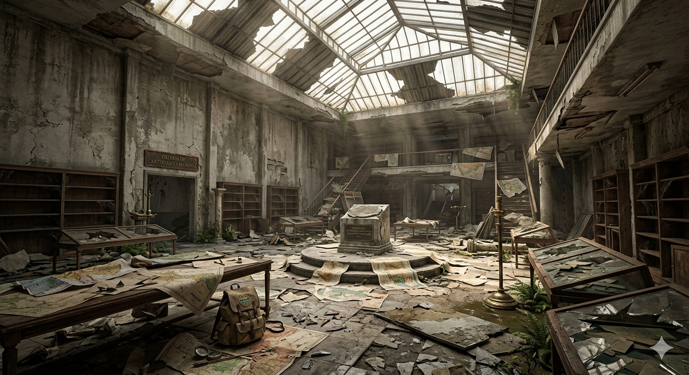
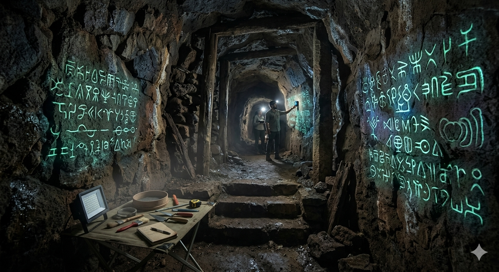
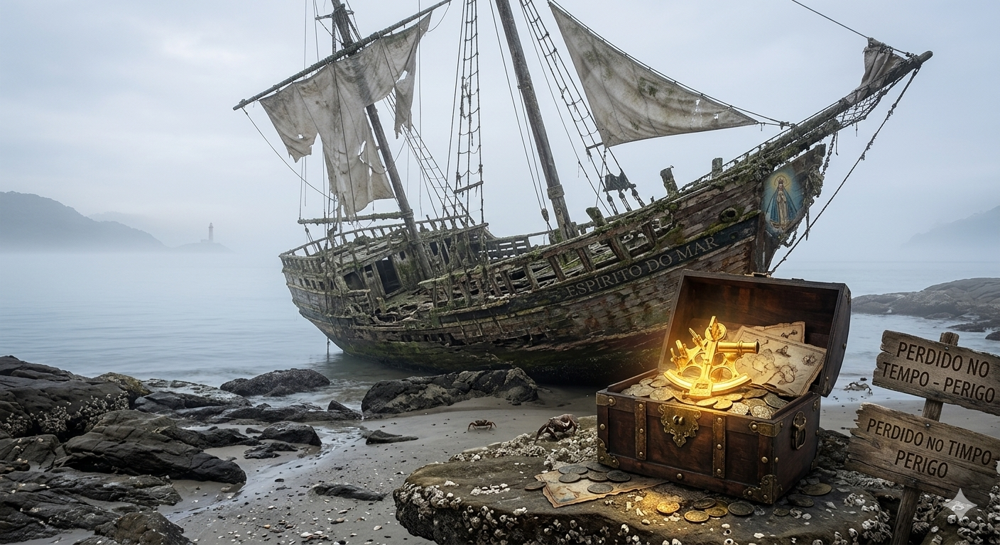
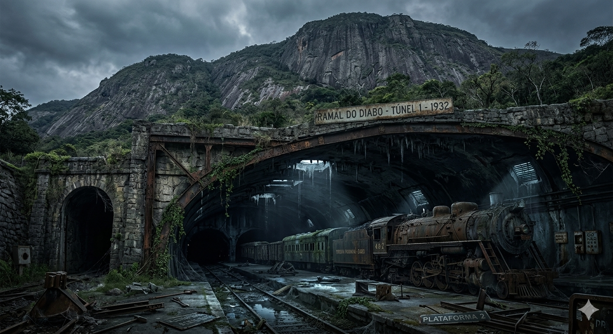
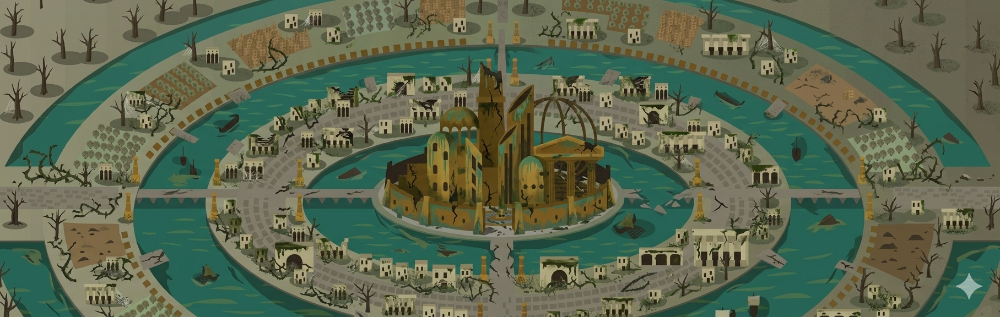
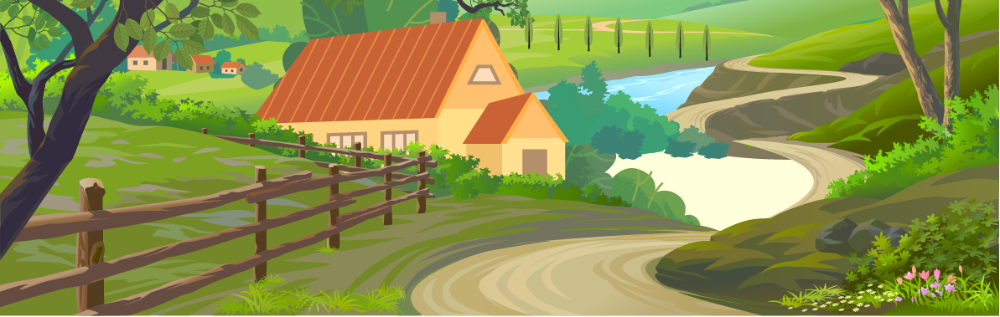

Enquanto caminhava por uma biblioteca antiga, encontrei um diário perdido que falava sobre uma cidade escondida entre montanhas.

Em Curitiba, você encontra uma estátua antiga com símbolos misteriosos.

Em Fortaleza, um pescador fala sobre túneis secretos perto da praia.

No parque, você encontra uma árvore oca com uma chave antiga.

No museu abandonado, um mapa aponta para uma estação subterrânea.

Nos túneis, símbolos antigos aparecem nas paredes, iguais ao diário.

Na costa, você encontra um barco abandonado com uma bússola dourada.
O portão leva a uma escadaria subterrânea iluminada por tochas.

Na estação abandonada, um trem enferrujado ainda funciona.
Os símbolos levam a uma porta de pedra atrás de uma cachoeira.
A bússola aponta para uma ilha cercada por névoa.
Você encontra uma biblioteca secreta cheia de mapas antigos.
O trem leva você para dentro de uma montanha onde existe uma cidade escondida.
Um corredor cheio de estátuas douradas aparece diante de você.

Na ilha, ruínas gigantes brilham com cristais azuis.
Os mapas revelam a localização da cidade perdida entre montanhas.
Depois de seguir todas as pistas, você finalmente encontra a lendária cidade perdida.
Você retorna para a biblioteca e deixa o diário na mesa, esperando o próximo aventureiro.
Depois volta para casa, sabendo que viu algo impossível.

Depois de tudo o que viveu, você finalmente retorna para casa.
Dessa vez não como alguém comum, mas como alguém que viu o impossível.
O mundo continua o mesmo… mas você não.
Você decide desistir da jornada e voltar para casa. O conforto do conhecido parece mais seguro.
A aventura termina aqui… pelo menos para você.